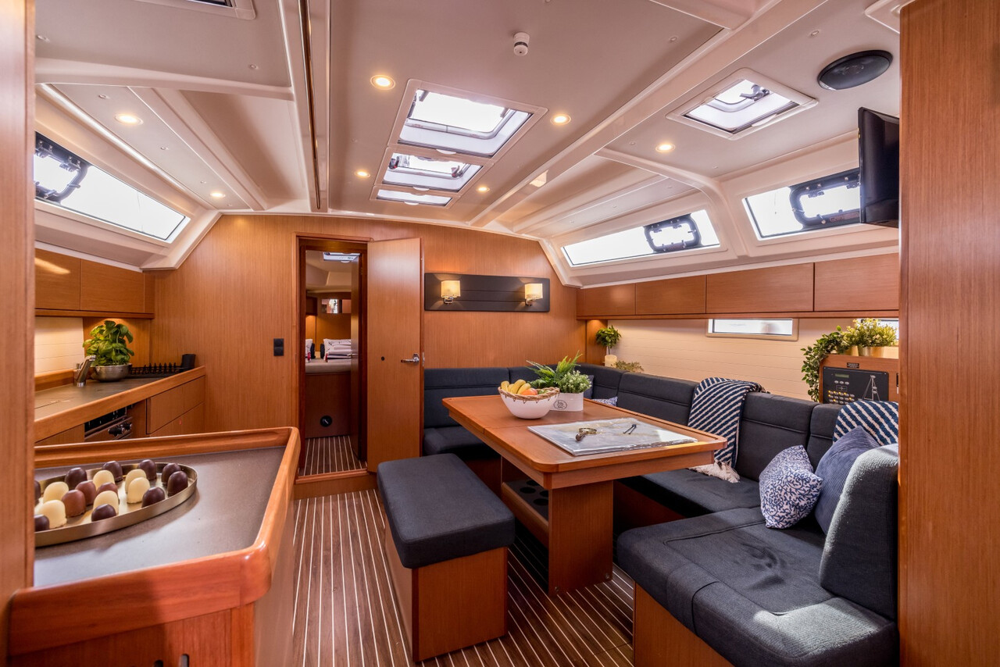
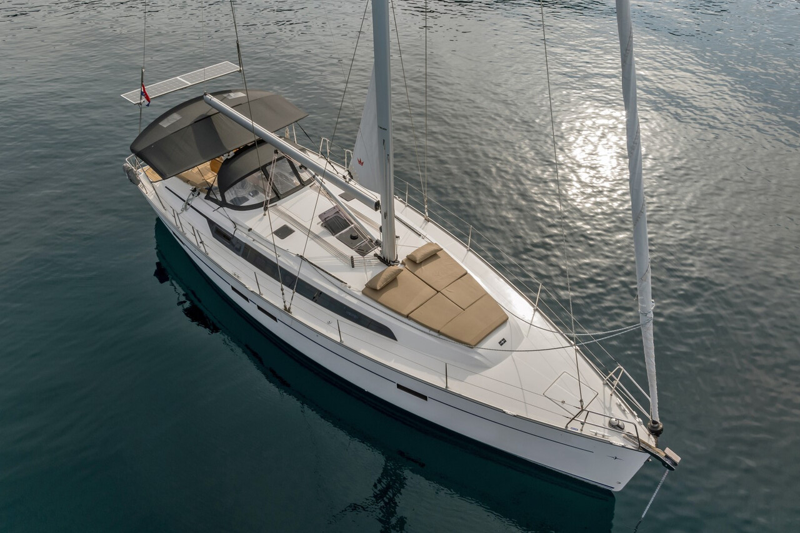

Материал перенесён из прежней версии сайта и сохранён как авторский аналитический обзор. Технические характеристики, комплектация и оценочные суждения требуют проверки применительно к конкретному году выпуска и судну; это не протокол испытаний EVA или DIANA.
Честный тест-драйв Bavaria Cruiser 46: Прагматизм и море жилого пространства
Детальный разбор сильных и слабых сторон популярного немецкого крейсера. Взгляд инженера на качество сборки, эргономику кокпита и поведение в легкий ветер.
⚓️ В двух словах: кто есть кто
Bavaria Cruiser 46 2020 года — это 46-футовый парусный монокорпус, который стал прямым наследником легендарной модели Cruiser 45 и одним из последних воплощений сотрудничества Bavaria с бюро Farr Yacht Design.
К 2020 году лодка уже была признанным «долгожителем»: с момента запуска в 2010-х годах было построено более 1100 экземпляров, и она продолжала сходить со стапелей, оставаясь хитом чартерного рынка. Этот проект — не про изящество, а про инженерный прагматизм и продуманную логистику для больших компаний.
📊 Технические характеристики
📸 Фотогалерея модели



👍 Сильные стороны: за что мы ценим Bavaria 46
Интерьер и жилое пространство: Это главный козырь Bavaria 46. Она спроектирована как настоящий плавучий дом для больших групп. Технология «flexi-bulkhead» позволяет перегородками разделить носовую каюту на две независимые. Пространство камбуза продумано так, чтобы два человека могли свободно готовить ужин, не блокируя проход в салон.
Ходовые качества и предсказуемость: Лодка демонстрирует приятное и стабильное поведение даже в сложных условиях. Она прощает ошибки новичкам и радует предсказуемостью опытных капитанов. Двигатель Volvo Penta на 55–75 л.с. обеспечивает уверенное маневрирование в порту или в полный штиль против встречных течений.
Продуманный кокпит: Основная философия — свобода перемещения. Центральный проход здесь остается полностью свободным. Все основные ходовые линии и управление такелажем выведены на посты рулевого, что делает лодку максимально комфортной для управления даже в одиночку.
Качество и конструкция: После реструктуризации 2011 года компания жестко пересмотрела контроль качества. Корпуса от Farr Yacht Design известны своей высокой жесткостью, а массивный чугунный или свинцовый киль обеспечивает отличную остойчивость и безопасность океанского уровня.
👎 Слабые стороны и болевые точки
- Долгое «пробуждение»: В легкий ветер (до 10 узлов) эта 12-тонная лодка чувствует себя довольно вяло. Чтобы она по-настоящему ожила, нужен рабочий ветер от 10 узлов истинной скорости, иначе придется запускать дизель.
- Эргономика сидений кокпита: В погоне за максимальной шириной кокпита инженеры сделали боковые опоры банок более крутыми и жесткими, что может ощущаться при длительных вахтах.
- Производственные нюансы: На некоторых бортах фиксируются микропротечки в районах крепления леерных стоек из-за старения герметика болтов. Также на старых модификациях требовал контроля узел верхнего штага.
- «Чартерная усталость»: При покупке лодки из-под аренды будьте готовы к капризам периферийной электрики, закисанию датчиков уровней баков и выгоранию пикселей дисплея двигателя.
💎 Вердикт
Bavaria Cruiser 46 — это идеальный надежный «шаттл» для большой команды или семьи. Машина создана перевозить людей с максимальным комфортом при минимальных усилиях по управлению. От Elan 45.1 она отличается философией: если словенец еще трепетно относится к спортивному парусу, то Bavaria — это современный автомобиль с автопилотом и большим багажником. Постройте маршрут из точки А в точку Б, закиньте ноги на банку — и она довезет.
PS: При осмотре конкретного борта уделите пристальное внимание трем вещам: следам подтеканий под леерами, пульту Volvo Penta и механизму стола кокпита. Не ждите от нее резвости в штиль — просто расслабьтесь и наслаждайтесь морем.